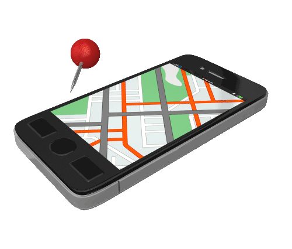

Funcionales
° Proceso de registro
El usuario debe registrarse con su nombre, su correo y una contraseña, confirmación de la contraseña.
° Inicio sesión:
Personas que haya tenido registro antes solo deben ingresar su nombre de usuario y su contraseña.° Buscador de rutas:
Emplea la opción de buscar y trazar rutas en la parte superior izquierda de la pantalla.° Representación de rutas
Una vez que haya buscado la ruta, la aplicación te mostrará el mapa por donde pasa la misma° Editor de perfil
Ayuda a personalizar tu información y guardarla en un perfil especial para el usuario.° Zoom en el mapa de la ciudad
Podrá hacer un acercamiento a las rutas trazadas o un alejamiento para ver la ruta completa de la ciudad y por donde y donde pasa.Dar acceso a su gps para actualizar su destino
Ubica su localización y este le ayuda a emplear rutas cercanas.No Funcionales
Mostrar unidades en servicio
Se verá un mapa que se dará en la aplicación, por medio de diferentes colores para diferenciar las rutas para poder ubicar con facilidad la ruta que se esté buscando.